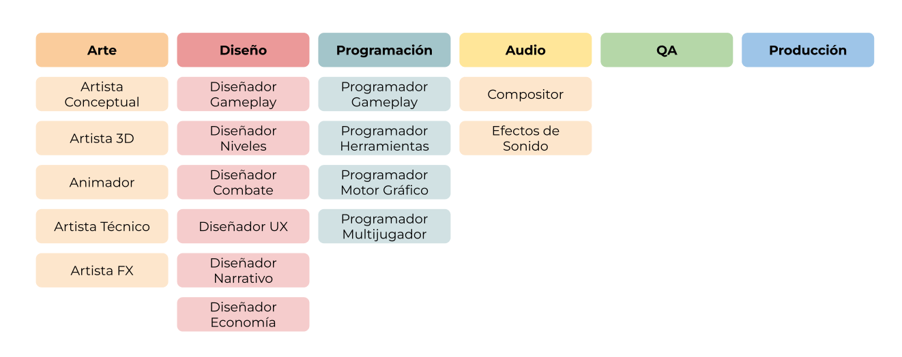
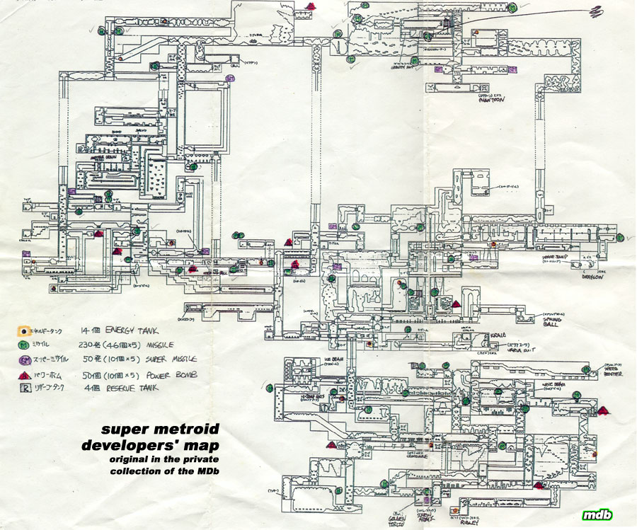
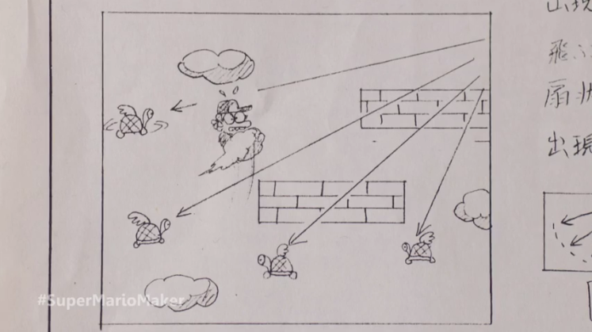
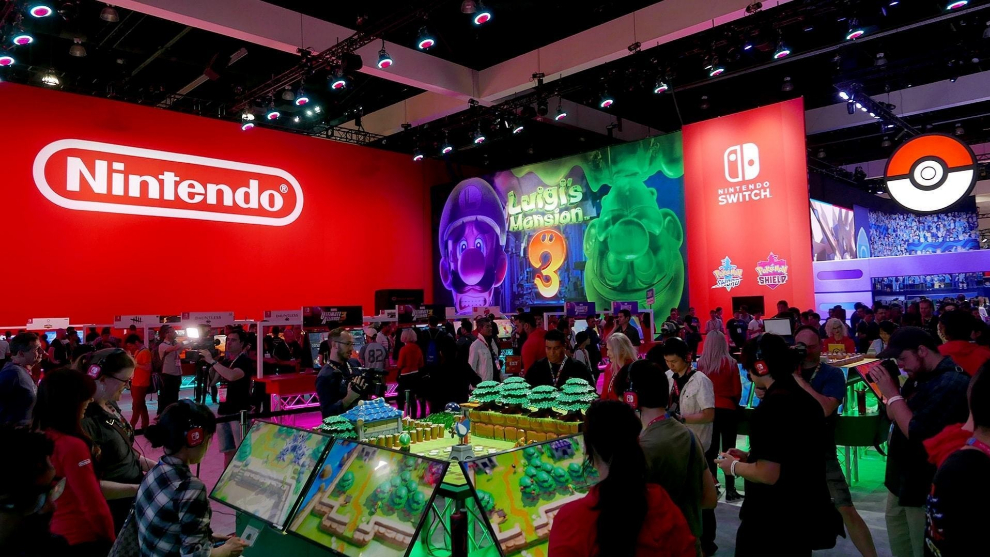
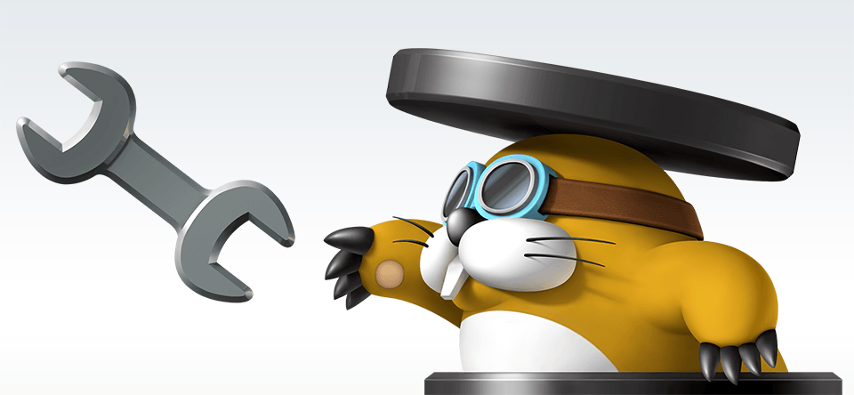
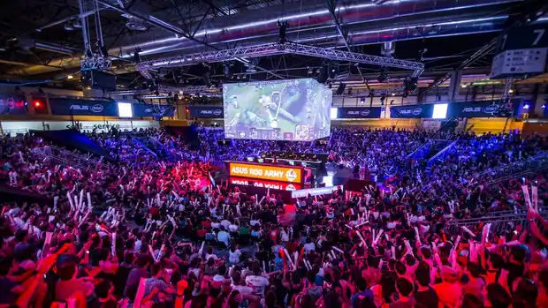

Creació d'un Videojoc
La creació d'un videojoc passa per diverses fases i tasques que s'han de dur a terme de manera ordenada i coordinada. A continuació es detallen les principals fases i tasques en el desenvolupament d'un videojoc:
Pre-producció
En aquesta fase es defineix la idea del videojoc, es realitza un estudi de mercat, es redacta el guió i es crea un pla de producció.
Producció
En aquesta fase es desenvolupa el videojoc, es creen els diferents elements com ara els personatges, els escenaris i la música, i es programen les mecàniques de joc.
Grans esdeveniments
En aquesta fase es realitzen els grans esdeveniments com ara la presentació del videojoc i les campanyes de màrqueting.
A punt d'acabar
En aquesta fase es realitzen les últimes correccions i millores abans del llançament del videojoc.
Testeig o proves de funcionament
En aquesta fase es realitzen les proves de funcionament per assegurar-se que el videojoc funciona correctament.

Acabament
En aquesta fase es realitzen les últimes millores i es prepara el videojoc per al llançament.
Manteniment
En aquesta fase es realitza el manteniment del videojoc, es corregeixen els errors i es realitzen les actualitzacions.
Cultura
En aquesta fase es realitza la promoció del videojoc i es crea una comunitat entorn del videojoc.
